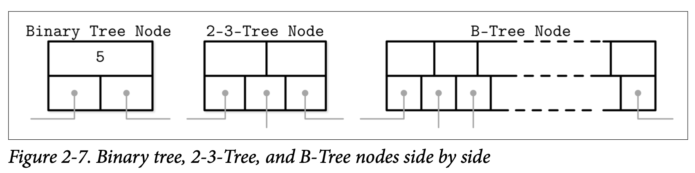
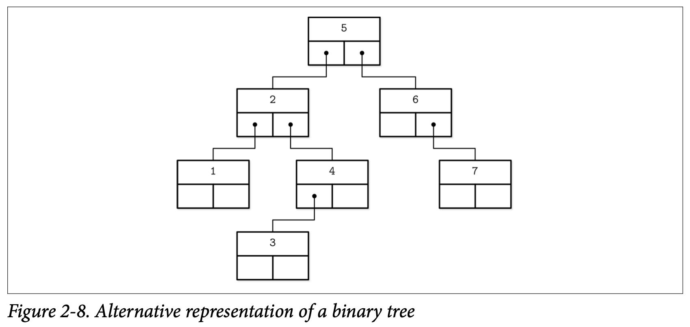
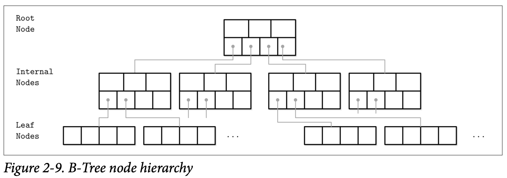
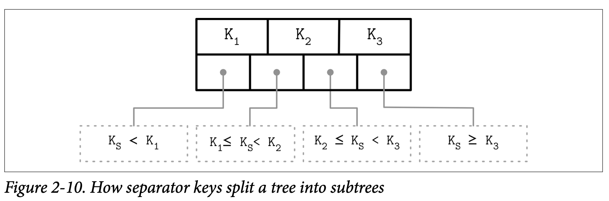

Ubiquitous B-Trees
可以将 B-Trees 想象成一个图书馆中的巨大目录：首先你要找到正确的陈列柜，然后在这个柜上找到正确的书架，然后在这个书架上找到正确的抽屉，然后在抽屉中找到你正在寻找的那个卡片。类似的， B-Tree 构建了一个帮助使用者快速定位他想找的数据的层次结构。
如我们之前讨论过的二叉查找树，B-Tree 构建为一个平衡搜索树，但跟普通的搜索树的区别在于具有更大的扇出量 (拥有更多的子节点) 跟更小的高度。
在大部分的介绍里面，二叉树的节点都被描绘为一个圆。因为每个节点唯一的职责就是保存对应的键跟将对应的区间分为两部分，这个细节水平基本是很直观的。而 B-Tree 的节点一般会被描绘为一个矩形，还重点指出了指针块来描述子节点跟分隔键之间的关系。Figure 2-7 依次展示了二叉树、2-3-Tree 跟 B-Tree 的节点，这能够帮助我们了解他们之间的相同点及差别

没有什么能够阻止我们以相同的方式画出二叉树。这些数据结构都具有类似的使用指针的语义，他们的区别则是从如果管理其中的平衡开始。Figure 2-8 展示了 BST 跟 B-Tree 之间的类似的点：Key 会将树分割成子树，并会用他来作为搜索目标的导航，你可以将它跟 Figure 2-1 做一下比较。
B-Tree 是有序的：在 B-Tree 中的 Key 都会按照顺序来存储。因此为了定位到需要查找的 Key 我们可以使用类似二分查找的算法。这同时也暗示了 B-Tree 的查找具有对数级别的复杂度。举例来说，为了在 40 亿个元素中查找某个目标需要进行 32 次比较，如果每次比较都需要在磁盘中进行寻址的话，会明显的拖慢整个过程，但因为 B-Tree 的节点存储了成打或上百个元素，我们可以只在每个层级上只执行一次磁盘寻址。查找算法更具体的细节会在本章的后面详细讨论。
使用 B-Tre，我们可以高效的执行点跟区间的查询。点查一般在查询语言中使用相等表达式表示，用来定义单条记录。另一种区间查询在查询语言中则一般使用比较表达式 (如 <、>、≤、≥) 来按查询一批有序的数据。
B-Tree Hierarchy
B-Tree 由许多的节点组成，每个节点或保存最多 N 个 Key 跟 N+1 个指向子节点的指针。这些节点在逻辑上我们可以将他们分成三组：
-
Root node
没有父节点、位于树顶端的节点
-
Leaf nodes
位于树的底端、没有子节点的节点
-
Internal nodes
除了以上两种节点，剩下的就只有这种节点了，通过他们将树的根及叶子连接起来。这类节点一般会存在多个不同的级别 (深度) 中。
这个层级关系展示在 Figure 2-9 中
因为 B-Tree 是按照 页 来进行组织的 (他们通常使用固定大小的页面尺寸)，因此我们将 节点跟页 作为相同的概念交替着使用。
节点的 capacity 容量跟其中真实存储的 Key 的数量的关系我们称之为 occupancy 使用率。
B-Tree 的特点是他的扇出量: 即每个节点存储的 Key 的数量。更高的扇出量让节点中存储的 Key 跟指针能够集中保存在单个块或多个连续的块中，因此能够分摊为了保持树平衡所所需对做的修改成本以及减少对磁盘的访问量。保持平衡的操作 (称为 splits 分割跟 merges 合并) 会在节点写满或接近空时触发。
B^+^-Trees
我们介绍具有类似属性的树时都使用了 B-Tree 这个词。在前面所介绍的数据结构的更具体的名字其实是 B^+^-Tree。[KNUTH98] 将具有高扇出的树称为多路树进行了介绍。
B-Tree 允许在树中任意层级的节点中存储数据：包括根、内部节点跟叶子节点。B^+^-Tree 则只允许将数据存储在叶子节点中。内部节点只存储了 separator keys 分割键，他用来告诉查询算法对应的键会出现在哪个叶子中。
因为 B^+^-Tree 只会在叶子节点存储数据，所有的操作 (插入、更新、删除跟查找) 都只会对叶子节点产生修改，并在需要进行分割跟合并时传播到更高的层级。
B^+^-Tree 使用的非常广，我们跟其他的介绍一样将它称为 B-Tree，比如 [GRAEEE11] 中将 B^+^-Tree 作为默认的设计，在 MySQL 的 InnoDB 实现的 B^+^-Tree 也被称为 B-Tree。
Separator Keys
保存在 B-Tree 节点中的 Key 一般称为 index entries 索引实体、separator keys 分割键或 divider cells 分隔单元。他们将树分割成了对应区间的多个子树 (也成为 branches 分支或 subrange 子区间)。这些 Key 会被有序的保存，因此能够对其使用二分查找。通过高层级的节点的 Key 及对应的指针能够找到对应的子树。
在节点中的第一个指针指向小于其第一个 Key 的子树，节点中的最后一个指针指向大于等于其最后一个 Key 的子树。其他指针所指向的子树中的 Key 都表达式 K~i-1~ ≤ K~S~ < K~i~ ，其中 K 是指所有 Key 的集合， K~S~ 在其子树中的 Key 集合。Figure 2-10 描述了这些特性
有一些 B-Tree 还保存了指向相邻节点的指针，不过他们一般存在于叶子节点，用于简化区间扫描操作。这些指针能够避免通过父节点来才能找到其相邻节点。有一些实现还使用了类似双向链表的两个指针来指向其前后两个相邻节点，这让他们可以实现对叶子节点进行反向的迭代。
让 B-Tree 与别不同的还有，不同于自顶向下 (如二叉查找树) 来构建树，他使用了另外一种自底向上的方式。当叶子节点增长时才会导致内部节点跟树的高度增高。
因为 B-Tree 为每个节点申请了额外的空间来供以后的插入跟更新使用，树的存储利用度可能会低于 50%，不过大部分情况下利用度会高得多。而更高的利用度并不用对 B-Tree 的性能产生负面的影响。